Convert a vector of MLB team abbreviations to an ordered factor by division and team name. Intended to be used for faceted plots where team logos are used in strip texts.
Arguments
- teams
A vector of MLB team abbreviations that should be included in
valid_team_names(). The function tries to clean team names internally by callingclean_team_abbrs().
Examples
# \donttest{
# unsorted vector including NFL team abbreviations
teams <- c("ATL", "WSH", "MIA", "BAL", "NYY", "BOS", "PHI", "NYM", "TB", "TOR")
# defaults to sort by division and nick name in ascending order
mlb_team_factor(teams)
#> [1] ATL WSH MIA BAL NYY BOS PHI NYM TB TOR
#> 30 Levels: BAL < BOS < NYY < TB < TOR < ATL < MIA < NYM < PHI < WSH < ... < SF
######### HOW TO USE IN PRACTICE #########
library(ggplot2)
library(magrittr)
# load some sample data from the ggplot2 package
plot_data <- mpg
# add a new column by randomly sampling the above defined teams vector
plot_data$team <- sample(teams, nrow(mpg), replace = TRUE)
# Now we plot the data and facet by team abbreviation. ggplot automatically
# converts the team names to a factor and sorts it alphabetically
ggplot(plot_data, aes(displ, hwy)) +
geom_point() +
facet_wrap(~team, ncol = 5) +
theme_minimal()

# We'll change the order of facets by making another team name column and
# converting it to an ordered factor. Again, this defaults to sort by division,
# league, and location in ascending order.
plot_data$ordered_team <- sample(teams, nrow(mpg), replace = TRUE) %>%
mlb_team_factor()
# Let's check how the facets are ordered now.
ggplot(plot_data, aes(displ, hwy)) +
geom_point() +
facet_wrap(~ordered_team, ncol = 5) +
theme_minimal()
 # The facet order looks weird because the defaults is meant to be used with
# MLB team logos. So let's use the actual logos and look at the result.
ggplot(plot_data, aes(displ, hwy)) +
geom_point() +
facet_wrap(~ordered_team, ncol = 5) +
theme_minimal() +
theme(strip.text = element_mlb_logo(size = .85))
# The facet order looks weird because the defaults is meant to be used with
# MLB team logos. So let's use the actual logos and look at the result.
ggplot(plot_data, aes(displ, hwy)) +
geom_point() +
facet_wrap(~ordered_team, ncol = 5) +
theme_minimal() +
theme(strip.text = element_mlb_logo(size = .85))
 # }
# }